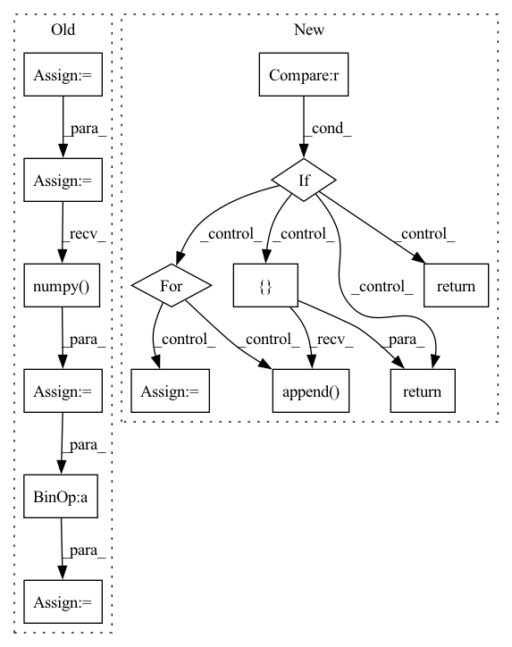

Pattern ID :946
Before Change
mask = pad_img_to_modulo(mask, mod=8)
mask = (mask > 0) * 1
image = torch.from_numpy(image).unsqueeze(0).to(device)
mask = torch.from_numpy(mask).unsqueeze(0).to(device)
inpainted_image = self.model(image, mask)
cur_res = inpainted_image[0].permute(1, 2, 0).detach().cpu().numpy()
cur_res = cur_res[0:origin_height, 0:origin_width, :]
cur_res = np.clip(cur_res * 255, 0, 255).astype("uint8")
cur_res = cv2.cvtColor(cur_res, cv2.COLOR_BGR2RGB)
return cur_res
After Change
return: BGR IMAGE
area = image.shape[1] * image.shape[2]
if area < self.crop_trigger_size[0] * self.crop_trigger_size[1] :
return self._run(image, mask)
print("Trigger crop image")
boxes = boxes_from_mask(mask)
crop_result = []
for box in boxes:
crop_image, crop_box = self._run_box(image, mask, box)
crop_result.append( (crop_image, crop_box))
image = (image.transpose(1, 2, 0) * 255).astype(np.uint8)[:, :, ::-1]
for crop_image, crop_box in crop_result:
x1, y1, x2, y2 = crop_box
image[y1:y2, x1:x2, :] = crop_image
return image
def _run_box(self, image, mask, box):
In pattern: SUPERPATTERN
Frequency: 3
Non-data size: 14
Instances Fragment ID: 4511428
Project Name: sanster/lama-cleaner
Commit Name: 43c9c22c7312dd39feac4e3783e9ec080fd64243
Time: 2022-03-22
Author: cwq1913@gmail.com
File Name: lama_cleaner/lama/__init__.py
M Class Name: LaMa
N Class Name: LaMa
M Method Name: __call__(3)
N Method Name: __call__(3)
M Parent Class:
N Parent Class:
M File Name: lama_cleaner/lama/__init__.py
N File Name: lama_cleaner/lama/__init__.py
M Start Line: 40
M End Line: 55
N Start Line: 50
N End Line: 65
Before Change
device = self.device
origin_height, origin_width = image.shape[1:]
image = pad_img_to_modulo(image, mod=8)
mask = pad_img_to_modulo(mask, mod=8)
mask = (mask > 0) * 1
image = torch.from_numpy(image).unsqueeze(0).to(device)
mask = torch.from_numpy(mask).unsqueeze(0).to(device)
inpainted_image = self.model(image, mask)
cur_res = inpainted_image[0].permute(1, 2, 0).detach().cpu().numpy()
cur_res = cur_res[0:origin_height, 0:origin_width, :]
cur_res = np.clip(cur_res * 255, 0, 255).astype("uint8")
cur_res = cv2.cvtColor(cur_res, cv2.COLOR_BGR2RGB)
return cur_res
After Change
return: BGR IMAGE
area = image.shape[1] * image.shape[2]
if area < self.crop_trigger_size[0] * self.crop_trigger_size[1] :
return self._run(image, mask)
print("Trigger crop image")
boxes = boxes_from_mask(mask)
crop_result = []
for box in boxes:
crop_image, crop_box = self._run_box(image, mask, box)
crop_result.append( (crop_image, crop_box))
image = (image.transpose(1, 2, 0) * 255).astype(np.uint8)[:, :, ::-1]
for crop_image, crop_box in crop_result:
x1, y1, x2, y2 = crop_box
image[y1:y2, x1:x2, :] = crop_image
return image
def _run_box(self, image, mask, box):
Fragment ID: 4511430
Project Name: sanster/lama-cleaner
Commit Name: 43c9c22c7312dd39feac4e3783e9ec080fd64243
Time: 2022-03-22
Author: cwq1913@gmail.com
File Name: lama_cleaner/lama/__init__.py
M Class Name: LaMa
N Class Name: LaMa
M Method Name: __call__(3)
N Method Name: __call__(3)
M Parent Class:
N Parent Class:
M File Name: lama_cleaner/lama/__init__.py
N File Name: lama_cleaner/lama/__init__.py
M Start Line: 40
M End Line: 55
N Start Line: 50
N End Line: 65
Before Change
acc = tf.reduce_mean(tf.cast(correct_prediction, tf.float32))
num_classes = scores.shape[-1]
predictions = tf.argmax(scores, axis=-1)
accuracies = []
labels = tf.cast(labels, tf.int64)
accuracy_mask = predictions == labels
for label in range(num_classes):
label_mask = labels == label
num_correct = (accuracy_mask & label_mask).numpy() .sum()
num_label = label_mask.numpy().sum()
if num_label == 0:
per_class_accuracy = np.nan
else:
per_class_accuracy = num_correct / num_label
accuracies.append(per_class_accuracy)
// overall accuracy
accuracies.append(np.nanmean(accuracies))After Change
A list of floats of length num_classes+1.
Consists of per class accuracy. Last item is Overall Accuracy.
if self.confusion_matrix is None :
return None
accs = []
for label in range(self.num_classes):
tp = np.longlong(self.confusion_matrix[label, label])
fn = np.longlong(self.confusion_matrix[label, :].sum()) - tp
if tp + fn == 0:
acc = float("nan")
else:
acc = tp / (tp + fn)
accs.append( acc)
accs.append(np.nanmean(accs))
return accs
def iou(self):
Compute the per-class IoU and the mean IoU. Fragment ID: 4511437
Project Name: intel-isl/open3d-ml
Commit Name: 67123f7e9d5dbbe6a73c42ef648093a7d25ace4a
Time: 2021-05-11
Author: sanskaragrawal107@gmail.com
File Name: ml3d/tf/modules/metrics/semseg_metric.py
M Class Name: SemSegMetric
N Class Name: SemSegMetric
M Method Name: acc(1)
N Method Name: acc(3)
M Parent Class: object
N Parent Class: object
M File Name: ml3d/tf/modules/metrics/semseg_metric.py
N File Name: ml3d/tf/modules/metrics/semseg_metric.py
M Start Line: 14
M End Line: 49
N Start Line: 25
N End Line: 55